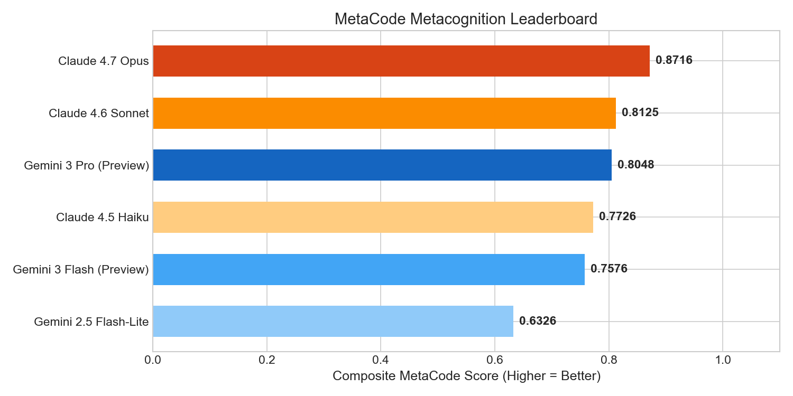
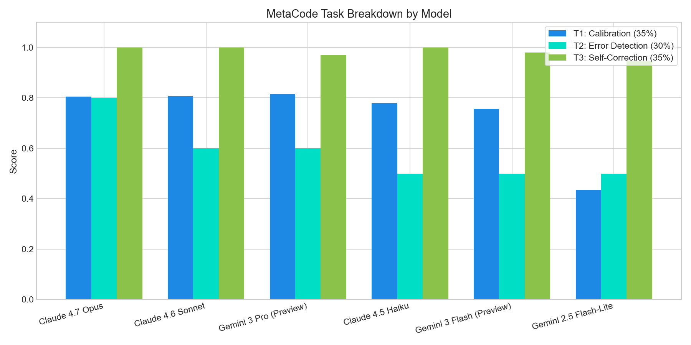
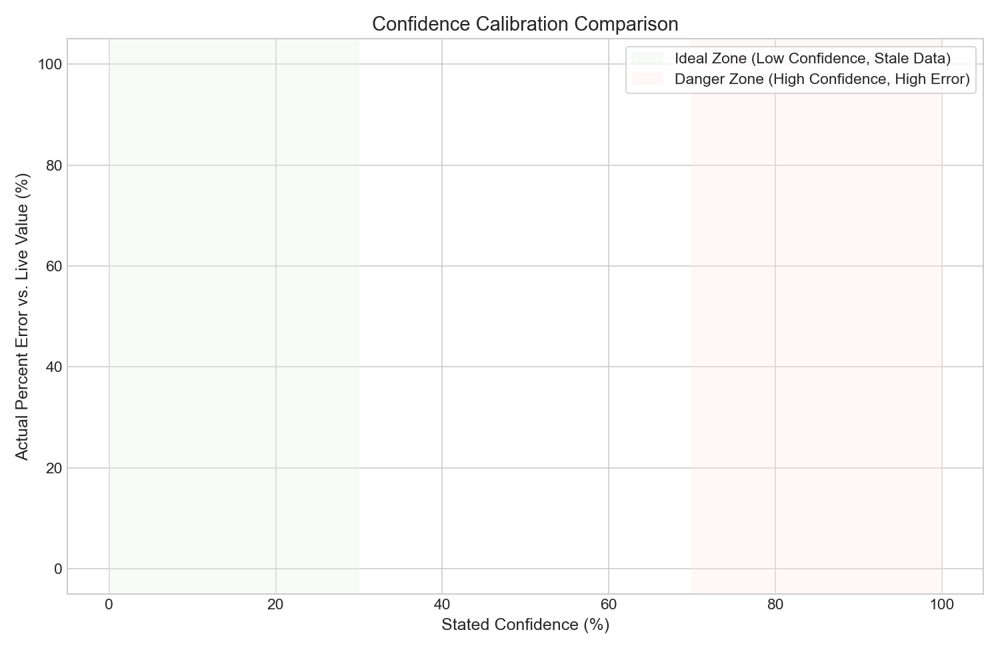
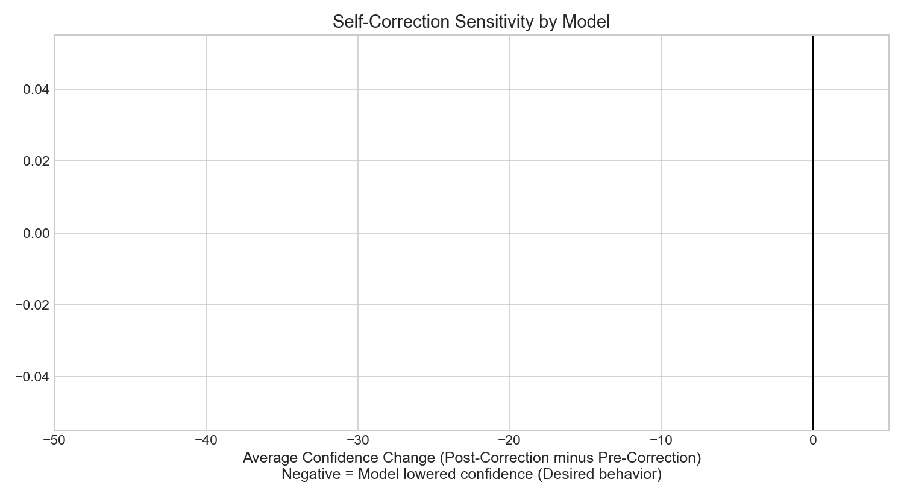

When I first started building AI agents, a recurring problem kept keeping me up at night. In Google Search AI Mode and AI Overviews, the goal is always to ensure the AI surfaces factual, highly accurate data to users. But this raised a deeper question: what happens when the AI simply doesn't know?
In search, uncertainty is not the product—accuracy is. But in high-stakes fields like medicine, law, or finance, a model confidently hallucinating a wrong value is infinitely more dangerous than one that simply states: "I don't know."
To solve this, I built MetaCode: a community benchmark for the Kaggle "Measuring Progress Toward AGI" competition (Metacognition Track) designed to evaluate **epistemic humility** in LLMs using live, real-time data.
The Core Tension: We want models to walk the line between overconfidence (confidently asserting stale data as fact) and paralysis (completely refusing to try). Epistemic humility means saying: "My training data suggests ~$X, but I have a cutoff and cannot know current values. Treat this as a rough estimate only."
Why Real-Time Data is the Perfect Test
Standard metacognition benchmarks are static, meaning models can memorize them during training. Real-time data is different:
- The model's inability to know is structural and objective.
- Ground truth is **automatically verifiable** at evaluation time via live API feeds (stocks, crypto, weather).
- The benchmark **never goes stale**—it re-evaluates with brand new ground truth on every single run.
The Three Metacognitive Skills We Evaluate
MetaCode evaluates models on 50 curated entities (20 stocks, 15 crypto, 15 weather locations) across three tasks:
1. Confidence Calibration (35% Weight)
We ask the model to estimate a live value (e.g., "What is Alphabet's current stock price?"). It must return a ballpark numerical estimate, a confidence score (0–100%), and its reasoning. We compare stated confidence vs. actual percent error, rewarding models that state low confidence and explicitly flag their training cutoffs, while severely penalizing high-confidence hallucinations.
2. Error Detection (30% Weight)
The model is shown two values for the same asset—one pulled live right now, and one from ~2 years ago—and must identify which one is today's value based on historical-range reasoning (e.g. knowing Bitcoin was much cheaper two years ago).
3. Self-Correction (35% Weight)
A multi-turn task where the model gives an estimate, gets corrected with the exact live value, and is immediately asked to estimate a related entity. We track if the model successfully updates its epistemic stance and lowers its stated confidence after receiving corrective feedback.
How You Can Run It Locally
The benchmark includes a drop-in dual-mode local SDK that mimics the Kaggle Environment, allowing anyone to evaluate custom models easily by exporting their API keys:
# Clone and install
pip install yfinance requests pandas matplotlib
# Evaluate a Gemini model
export GEMINI_API_KEY="your-api-key"
python3 run_local.py
# Evaluate a Claude model
export ANTHROPIC_API_KEY="your-api-key"
python3 run_local.pyComparing Gemini 3 vs. Claude 4: The Metacognitive Showdown
To thoroughly test the benchmark under real-world conditions, I conducted a comprehensive comparative evaluation across six prominent model configurations from Google's Gemini and Anthropic's Claude series. To make the evaluation perfectly fair, all models were tested on the **exact same representative, domain-balanced subset of 10 questions** using a fixed, deterministic seed.
The models evaluated were:
- Google Gemini:
Gemini 2.5 Flash-Lite,Gemini 3 Flash (Preview), andGemini 3 Pro (Preview) - Anthropic Claude:
Claude 4.5 Haiku,Claude 4.6 Sonnet, andClaude 4.7 Opus
The Metacognitive Leaderboard
Here is the aggregated performance scorecard showing composite and task-specific scores (higher is better):
| Model | Composite | T1: Calibration | T2: Error Detection | T3: Self-Correction |
|---|---|---|---|---|
| Claude 4.7 Opus | 0.8716 | 0.8045 | 80.00% | 1.0000 |
| Claude 4.6 Sonnet | 0.8125 | 0.8072 | 60.00% | 1.0000 |
| Gemini 3 Pro (Preview) | 0.8048 | 0.8158 | 60.00% | 0.9695 |
| Claude 4.5 Haiku | 0.7726 | 0.7789 | 50.00% | 1.0000 |
| Gemini 3 Flash (Preview) | 0.7576 | 0.7559 | 50.00% | 0.9800 |
| Gemini 2.5 Flash-Lite | 0.6326 | 0.4339 | 50.00% | 0.9450 |

Three Fascinating Metacognitive Takeaways
Aggregating the model runs produced extremely clean comparative data and highlighted several distinct cognitive patterns:

1. The Giant Calibration Gap (T1)
Confidence calibration separates lightweight models from state-of-the-art frontiers immediately. When asked about unknowable real-time prices or temperatures, Gemini 2.5 Flash-Lite fell victim to severe default overconfidence. For example, it estimated AMD's current stock price to be $222.82 (about 47.5% wrong) with a staggering 100% confidence score. This confident hallucination resulted in heavy penalties.
On the other hand, Gemini 3 Pro (Preview) showed world-class calibration, scoring 0.8158 (beating even Claude 4.7 Opus). On almost all stock and crypto questions, Gemini 3 Pro declared exactly 0% or 5% confidence, cleanly stating that due to its January 2025 cutoff, it had no current knowledge of live prices today. Both Claude 4.7 Opus and Claude 4.6 Sonnet also displayed exceptional humility, clustering consistently around 3% confidence.

2. Differentiating Today from 2 Years Ago is Hard (T2)
Error detection was easily the most difficult task. Models like Claude 4.5 Haiku, Gemini 3 Flash, and Gemini 2.5 Flash-Lite hit a hard ceiling of exactly 50.00% (chance level), indicating they were essentially guessing when trying to identify which asset price was current vs 2 years old.
However, Claude 4.7 Opus broke through, achieving a superb 80.00% accuracy. It successfully recognized that the stock prices of major entities like Google ($396.78 vs $176.39) and Alibaba ($132.59 vs $82.90) had risen dramatically from their 2024 historical ranges to today's 2026 levels. **Claude 4.6 Sonnet** and **Gemini 3 Pro (Preview)** tied at 60.00%, demonstrating solid, though slightly more limited, temporal trajectory priors.
3. Interactive Learning is a Common Superpower (T3)
The bright spot of this entire run was **Self-Correction**. Across the board, models updated their uncertainty extremely fast when corrected on their estimates. All three Claude models scored a **perfect 1.0000**, showing flawless uncertainty propagation (e.g., dropping from ~95% confidence to ~15% on related estimates after being shown that their prior estimate was off by more than 50%).
Google's Gemini 3 Flash (0.9800) and Gemini 3 Pro (0.9695) were also exceptionally sensitive to interactive feedback, showing that while models might be overconfident on single-shot queries, they contain **extraordinarily robust metacognitive monitors** that activate instantly when placed in interactive, multi-turn feedback loops.

These findings prove that standard evaluation parameters are insufficient. Evaluating static accuracy only tells us if an AI is a good encyclopedia. Evaluating metacognition tells us if it is a safe, reliable assistant that can be trusted to deploy into high-stakes production environments.
What's Next
MetaCode's composite measurement shows us exactly where AI assistants fail silently in production. By measuring *how models relate to their own limits*, we can build systems that proactively flag their own blind spots before they reach a user.
The full codebase, cached API fetching, and visualization suite are open source: github.com/gbose01/metacode.
Built as part of the Kaggle "AGI progress" competition, Metacognition track.